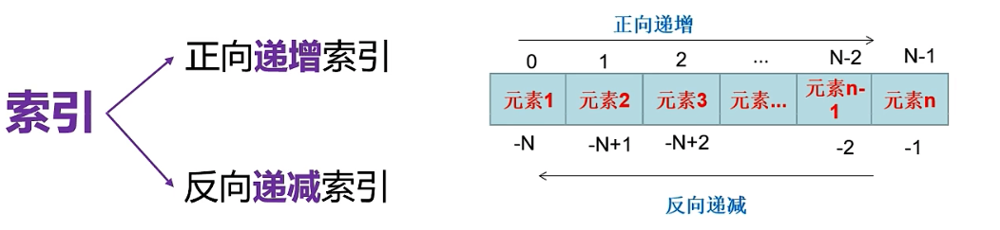
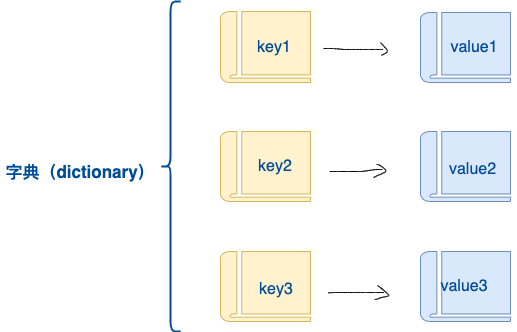

Python 编程基础与进阶
资料库《1_python编程基础与进阶》全部 9 篇文档的可视化合集，保留原文章节结构、代码块、表格与外链。
Miniconda3-latest-Windows-x86_64.7z
#Python 基础与环境搭建
核心驱动问题：我们要开始大模型应用开发了，需要写 Python 代码，但为什么不同的项目总因为环境问题跑不起来？怎么才能快速、干净地搭建一套属于自己的 Python 开发环境，让后续学习零障碍？
#1. Python 语言简介与发展历程
#1.1 为什么选择 Python？
简洁易读：语法接近自然语言，强制缩进使代码结构清晰，非常适合快速原型开发。
“胶水语言”：能轻松调用 C/C++ 等底层代码，兼顾开发速度和运行性能。
生态庞大：拥有 PyPI 数十万第三方库，覆盖 Web、AI、爬虫、自动化运维等几乎所有领域。
AI 领域统治力：NumPy、Pandas、TensorFlow、PyTorch 等核心库使 Python 成为人工智能与数据科学的事实标准。
#1.2 发展里程碑（精简版）
时间 | 版本 | 核心变化与意义 |
|---|---|---|
1989-1991 | 0.9.0 发布 | Guido van Rossum 创造，初衷是填补 C 和 Shell 之间的空白，名字源自喜剧团体 Monty Python。 |
1994 | 1.0 | 引入 lambda、map、filter 等函数式工具。 |
2000 | 2.0 | 加入垃圾回收、Unicode 支持，社区驱动开发。 |
2008 | 3.0 | 彻底重构，不完全向下兼容（print 变为函数，默认 Unicode），进入 2.x 与 3.x 长期共存期。 |
2015+ | — | TensorFlow、PyTorch 等框架出现，Python 在深度学习中确立统治地位。 |
2020 | 2.7 退役 | 官方停止维护 Python 2，社区全面转向 Python 3。 |
2022-至今 | 3.11-3.13 | 解释器性能大幅提升（“香农计划”），引入 match/case 结构模式匹配、类型提示等现代特性。 |
学习提示：本课程所有代码均基于 Python 3.10 及以上 版本，请务必不要再安装 Python 2。
#2. Python 解释器安装（Windows 实操）
解释器是运行 Python 代码的基础。我们安装最新稳定版（推荐 3.11 或 3.12）。
步骤演示：
访问 python.org ，下载 Windows installer (64-bit)。
双击安装包，务必勾选“Add python.exe to PATH”（这样可以在命令行直接使用
python命令）。
选择“Customize installation”可自定义路径（如
D:\Python312），并确保勾选pip和tcl/tk组件。
安装完成后，打开 命令提示符 验证：
python --version
# 输出示例：Python 3.12.3
pip list
#3. 集成开发环境（IDE）选择与配置
好的工具能提升数倍效率，我们介绍三款主流 IDE，重点演示 VSCode（轻量全栈）与 PyCharm（专业强大），并让 Jupyter Notebook 成为数据分析演示利器。
#3.1 Visual Studio Code（推荐，全栈通用）
特点：微软开源免费，启动快，插件丰富，适合前后端、脚本等多语言开发。
快速上手：
下载安装 VSCode。
打开 VSCode，点击左侧扩展图标，搜索
Python并安装官方插件。按
Ctrl+Shift+P打开命令面板，输入Python: Select Interpreter，选择已安装的 Python（或稍后创建的虚拟环境）。新建
.py文件，输入print("Hello, AI")，点击右上角 ▶ 运行。
#3.2 PyCharm（专业大型项目首选）
版本：社区版（免费）足够日常学习，专业版增加 Web 框架与数据库工具。
关键配置：
下载安装 PyCharm
安装时勾选“创建桌面快捷方式”和“关联 .py 文件”。
首次打开选择“Do not import settings”。
新建项目时，可自动创建虚拟环境（推荐），并在右下角解释器选择器中确认使用正确的 Python。

#3.3 Jupyter Notebook / Lab（数据探索与教学演示）
特点：浏览器交互，代码、图表、Markdown 混合编写，最适合数据分析与逐步演示。
安装与使用：
# 注意在项目路径下进入终端
pip install notebook -i https://pypi.tuna.tsinghua.edu.cn/simple
jupyter lab # 启动后浏览器自动打开1、亦可在 VSCode 中进入扩展界面，搜索“jupyter”安装，然后新建 .ipynb 文件，直接获得同等交互体验。
2、同样可以在新版的PyCharm中新建Jupyter Notebook文件，点击运行安装内核，获取同等交互体验。
#4. 包管理利器：pip 与镜像加速
Python 的强大离不开第三方库，pip 是官方包管理器，用于安装、卸载和管理依赖。
#4.1 常用命令速查
pip install <包名> # 安装最新版
pip install <包名>==<版本号> # 安装指定版本（如 django==4.2）
pip install -r requirements.txt # 批量安装项目所有依赖
pip freeze > requirements.txt # 导出当前环境依赖，方便移植
pip uninstall <包名> # 卸载包
pip list # 查看安装列表
pip show <包名> # 显示安装包的信息#4.2 配置国内镜像源（提速必备）
默认从国外服务器下载很慢，可永久配置清华源。在 Windows 文件管理器地址栏输入 %APPDATA% 回车，新建 pip 文件夹，在其中新建 pip.ini 文件，写入：
[global]
index-url = https://pypi.tuna.tsinghua.edu.cn/simple
extra-index-url = https://mirrors.aliyun.com/pypi/simple/临时使用：pip install <包名> -i https://pypi.tuna.tsinghua.edu.cn/simple
#5. 虚拟环境管理——解决环境冲突的银弹
痛点：项目 A 要用 Django 3.2，项目 B 要用 Django 4.2，直接装系统全局会冲突。虚拟环境为每个项目创建独立的 Python 解释器环境，各自拥有独立的包，互不干扰。
#5.1 使用 Python 内置 venv（轻量快捷）
# 在项目根目录打开终端
python -m venv myenv # 创建名为 myenv 的虚拟环境
# 激活（Windows）
myenv\Scripts\activate
# 激活（macOS/Linux）
source myenv/bin/activate
# 现在命令行前缀会显示 (myenv)，用 pip 安装的包只在此环境生效
pip install numpy
# 退出虚拟环境
deactivate#5.2 使用 Conda（数据科学与多语言环境首选）
Conda 可管理 Python 自身版本以及 C 扩展包，尤其适合 AI 领域。
下载并安装 Miniconda（体积小，仅包含 conda + Python）。
安装时务必勾选“Add to PATH”（或安装后手动配置环境变量：将
D:\conda及D:\conda\Scripts加入系统 Path）。
验证：打开新终端，输入
conda --version显示版本即成功。
基本命令：
conda create -n aicourse python=3.11 # 创建指定 Python 版本的环境
conda activate aicourse # 激活环境
pip install numpy pandas # 安装科学计算包
conda deactivate # 退出
conda env list # 查看所有环境
conda env remove -n aicourse # 删除环境注意：激活 conda 环境后，pip 和 conda 安装的包都会进入该环境，互不影响。
#5.3 理解系统 Python 与环境 Python
系统 Python：安装在操作系统 Path 中的解释器，用于全局调用。
环境 Python：由 venv/conda 创建的某个目录下的解释器副本，激活后覆盖系统默认 Python。养成“一个项目一个环境”的习惯，是专业开发的基本素养。
#Python 基础语法——让程序与你对话并完成计算
驱动问题：我们要构建一个能与用户交互、接收输入、完成计算并格式化输出结果的程序——例如一个简易计算器。要完成这个任务，必须掌握 Python 的代码规范、变量管理、输入输出、运算符和类型转换。本节将这些零散知识点串联，带你写出第一段真正有用的交互式脚本。
#1. 代码规范与注释——写出“好看”的代码
Python 强制使用缩进表示代码块，省去了 C/Java 风格的大括号，使程序结构清晰。
#1.1 基本行结构
Python 语句以换行结束，无需分号
;。
若一行太长，可用反斜杠
\续行，或在圆括号、方括号、花括号内直接换行。
# 正常换行
print("第一行")
print("第二行")
# 续行符
total = 1 + 2 + 3 + \
4 + 5 + 6
print(total)
# 括号内直接换行（推荐，更美观）
fruits = ["苹果", "香蕉",
"橘子", "葡萄"]
print(fruits)#1.2 缩进规则（核心）
Python 用缩进表示代码块，同级代码必须保持相同缩进。
推荐使用 4 个空格 或 1 个 Tab（整个文件保持统一，PEP 8 建议用空格）。
缩进错误会引发
IndentationError。
# ✅ 正确
if True:
print("缩进了 4 个空格")
print("同属一个代码块")
# ❌ 错误（缺少缩进）
if True:
print("这行会报错") # IndentationError: expected an indented block#1.3 注释
单行注释：以
#开头，#后建议加一个空格。
多行注释/文档字符串：用三个单引号
'''或三个双引号"""包裹，通常用于函数、类、模块的说明。
name = "Alice" # 这是行尾注释，说明变量含义
def add(a, b):
"""
两数相加函数
参数 a: 第一个加数
参数 b: 第二个加数
返回: 两数和
"""
return a + b
content = '''
零基础 学AI 找冰可乐 不踩坑
冰可乐是专业的IT团队
欢迎大家的到来
'''
print(content)#2. 变量与标识符——给数据贴标签
#2.1 变量：动态、三要素、无需声明
Python 变量是动态类型的：赋值时就决定了类型，且之后可以改变类型。\ 每个变量包含三个要素：
id：内存地址（唯一标识）
type：数据类型
value：具体值
x = 10
print(id(x), type(x), x) # 输出类似: 140736... <class 'int'> 10
x = 3.14
print(id(x), type(x), x) # id 改变，类型变为 float#2.2 标识符命名规范
只能由字母（区分大小写）、数字、下划线
_组成。
不能以数字开头。
不能与 Python 关键字（如
if,for,while）重名。
建议：见名知意，使用下划线命名法
my_var(更推荐) 或驼峰命名法myVar。
# 查看所有关键字
import keyword
print(keyword.kwlist)
print(f"关键字总数: {len(keyword.kwlist)}")
# 判断是否为关键字
print(keyword.iskeyword('for')) # True
print(keyword.iskeyword('end')) # False#2.3 标识符示例
student_name = "小明" # 下划线命名
studentAge = 20 # 驼峰命名（也可用，但 PEP8 推荐下划线用于变量）
# 2name = "error" # 错误：不能以数字开头
# class = "error" # 错误：class 是关键字#3. 输入与输出——让程序与你对话
操作 | 语法 | 说明 |
|---|---|---|
输出 |
|
|
输入 |
| 接收的数据类型始终是字符串，计算前需转换 |
#3.1 基本输出
print("HelloWorld")
print("Hello", "World") # Hello World
print("Hello", "World", sep="-") # Hello-World
print("Hello", end="") # 不换行
print("World") # HelloWorld#3.2 格式化输出（从旧到新）
% 格式化（旧风格，了解即可）
str.format()（灵活但稍显冗长）
f-string（Python 3.6+ 强烈推荐，简洁高效，支持表达式）
name = "Alice"
age = 25
# 1. % 格式化
# %s %f %d %i %c %o #x %.2f
print("姓名: %s, 年龄: %d" % (name, age))
print("姓名: %s, 年龄: %.2f" % (name, age))
# 2. format() 方法
print("姓名: {0}, 年龄: {1}".format(name, age))
print("姓名: {0}, 年龄: {1}".format(age, name))
print("姓名: {name}, 年龄: {age:.2f}".format(name=name, age=age))
print("姓名: {name}, 年龄: {age}".format(age=age, name=name))
print("{:*^20}".format("居中填充")) # ******居中填充*******
# 3. f-string （推荐）
print(f"姓名: {name}, 年龄: {age}")
print(f"{3.14159:.2f}") # 3.14 控制浮点数精度
print(f"{age:>10}") # 右对齐，宽度 10#3.3 输入与类型转换
input() 返回的是字符串，数学运算前必须转为数字。
# ❌ 错误示例：字符串相加变成了拼接
a = input("请输入第一个整数: ") # 输入 10
b = input("请输入第二个整数: ") # 输入 20
c = a + b
print(f"{a} + {b} = {c}") # 10 + 20 = 1020
# ✅ 正确做法：使用 int() 或 float() 转换
a = int(input("请输入第一个整数: "))
b = int(input("请输入第二个整数: "))
c = a + b
print(f"{a} + {b} = {c}") # 10 + 20 = 30#3.4 转义字符速查
\n换行
\t制表符（Tab）
\\反斜杠本身
\"双引号
print("第一行\n第二行") # 两行输出
print("姓名\t年龄\t城市") # 各列对齐
print("0基础 学AI 找\"冰可乐\" 不踩坑") # 转义双引号#4. 运算符——赋予程序计算能力
#4.1 算术运算符
print(10 + 3) # 13
print(10 - 3) # 7
print(10 * 3) # 30
print(10 / 3) # 3.333... 真除，结果为浮点数
print(10 // 3) # 3 整除（向下取整）
print(10 % 3) # 1 取模（求余）
print(2 ** 3) # 8 幂#4.2 赋值运算符与复合赋值
x = 10
x += 5 # 等价于 x = x + 5
x *= 2 # 等价于 x = x * 2
print(x) # 30
x /= 3 # 等价于 x = x / 3
print(x) # 10.0
x **= 2 # 等价于 x = x ** 2
print(x) # 100.0经典例题：
a = 12
a += a * a # a = a + (a*a) = 12 + 144 = 156
print(a) # 156
i, j, k = 10, 10, 3
k *= i + j # k = k * (i+j) = 3 * 20 = 60
print(k) # 60#4.3 比较运算符（返回布尔值）
print(3 > 2) # True
print(3 < 2) # False
print(3 == 3) # True
print(3 != 3) # False
print(3 >= 2) # True
print(3 <= 3) # True常用判断模板（务必熟练）：
判断偶数：
num % 2 == 0
判断奇数：
num % 2 != 0
判断5的倍数：
num % 5 == 0
#4.4 逻辑运算符：and, or, not
and：两边都为True才为True，全真才真，遇假则假
or：至少一边为True就为True，遇真则真，全假才假
not：取反，非真即假，非假即真
print(3 > 2 and 5 > 3) # True
print(3 > 5 or 5 > 3) # True
print(not 3 > 2) # False注意：布尔值可参与整数运算，True 为 1，False 为 0。
x = 2
print(x + (3 > 2)) # 2 + True = 2 + 1 = 3# 补充逻辑短路现象 （以除数不能为0的语法错误进行示例）
# print(3>2 and 3/0) # ZeroDivisionError: division by zero
print(3<2 and 3/0) # False
# print(3<2 or 3/0) # ZeroDivisionError: division by zero
print(3>2 or 3/0) # True经典条件组合：
能被3或5整除但不能被7整除：\
(num % 3 == 0 or num % 5 == 0) and num % 7 != 0
判断三位数：\
100 <= num <= 999或num > 99 and num < 1000
闰年判断：\
(year % 4 == 0 and year % 100 != 0) or (year % 400 == 0)
#4.5 位运算符（二进制层操作）
直接对整数的二进制补码按位运算：
运算符 | 含义 | 示例 | 结果 |
|---|---|---|---|
| 按位与 |
|
|
\` | \` | 按位或 | \`25 |
| 按位异或 |
|
|
| 按位取反 |
|
|
| 左移（低位补0） |
|
|
| 右移（正数补0，负数补1） |
|
|
常见题型（十六进制/八进制参与位运算）：
# 0x10 | 0x01 = 0x11
# 0x10 & 0x01 = 0x00
# 12 & 0o12 的十进制结果：12 & 10 = 8#4.6 运算符优先级（由高到低）
()括号
**乘方
*,/,//,%乘除
+,-加减
比较运算符（
>,<,==等）
not,and,or
=赋值
技巧：不确定优先级时直接加括号，增强可读性。
#5. 数据类型转换——打通字符串与数字的壁垒
前面看到 input() 返回字符串，需转换为数字才能运算。Python 提供了一组内置转换函数：
函数 | 作用 | 示例 |
|---|---|---|
| 转为整数 |
|
| 转为浮点数 |
|
| 转为字符串 |
|
| 转为布尔值 |
|
| ASCII 码→字符 |
|
| 字符→ASCII 码 |
|
| 十进制→二进制 |
|
| 十进制→十六进制 |
|
| 十进制→八进制 |
|
应用演示：大小写字母转换原理（ASCII 码相差 32）
ch = 'a'
upper = chr(ord(ch) - 32)
print(f"{ch} 的大写是 {upper}") # Anum = 123
print(id(num), type(num), num)
print(num + 456)
num = str(num)
print(id(num), type(num), num)
print(num + "456")# 在实际的计算中，存在隐式类型转换
a = 1
b = 1.5
c = a + b
print(f"{a} + {b} = {c}")#6. 学以致用：简易计算器（串联全部知识点）
需求：用户输入两个数字，程序计算它们的加、减、乘、除并格式化输出结果，同时判断两数是否相等。
# 简易计算器 - 演示变量、输入输出、运算符与类型转换
print("=== 简易计算器 ===")
num1 = float(input("请输入第一个数字: "))
num2 = float(input("请输入第二个数字: "))
# 计算
add = num1 + num2
sub = num1 - num2
mul = num1 * num2
div = num1 / num2
eq = num1 == num2
# 格式化输出
print(f"\n{num1} + {num2} = {add}")
print(f"{num1} - {num2} = {sub}")
print(f"{num1} × {num2} = {mul}")
print(f"{num1} ÷ {num2} = {div}")
print(f"两数相等吗？ {eq}")#7. 练习
练习 1（水仙花数判断）\ 输入一个三位数，判断它是否为水仙花数（各位数字立方和等于本身，如 153=1³+5³+3³）。
num = int(input("请输入一个三位数："))
g = num % 10
s = num // 10 % 10
b = num // 100 % 10
print(f"输入的三位数 {num} 是水仙花数吗？{g ** 3 + s ** 3 + b ** 3 == num}")练习 2（闰年判断与平年）\ 输入年份，输出是闰年还是平年。
year = int(input("请输入年份："))
ret = (year % 4 == 0 and year % 100 != 0) or (year % 400 == 0)
print(f"{year}年是闰年吗？{ret}")#Python 核心数据结构——让数据管理井井有条
驱动问题：我们要实现一个“班级成绩管理系统”，需要存储学生姓名、各科成绩，实现增删改查、排序、去重、统计等功能。面对一堆数据，如何选择最合适的容器？Python 提供了六种核心数据结构：数字、字符串、列表、元组、集合、字典。学完本模块，你不仅能扎实掌握它们的特性与方法，还能真正理解“在什么场景下用哪种结构”。
#1. 数字类型 (Number) —— 计算的基石
Python 内置四种数字类型：int（整数）、float（浮点数）、bool（布尔值）、complex（复数）。其中前三种最常用。
#1.1 整数 int：无限大，有小整数池
Python 3 中整数没有大小限制，理论上可以表达任意大的数。
小整数池：\[-5, 256\] 范围内的整数，解释器会预先创建并复用，以优化内存。因此不同变量赋相同小整数时，可能指向同一对象。
a = 10
b = 10
print(a is b) # True （小整数池复用）
c = 1000
d = 1000
print(c is d) # 可能为 False（超出范围，一般不会复用）#1.2 浮点数 float：精度陷阱与正确比较
二进制无法精确表示某些十进制小数，导致 0.1 + 0.2 != 0.3。
print(0.1 + 0.2) # 0.30000000000000004
print(round(0.1 + 0.2, 2) == 0.3) # True，借助 round 粗略比较
# 专业做法：使用 math.isclose (Python 3.5+)
import math
print(math.isclose(0.1 + 0.2, 0.3)) # True特殊值：float('inf') 正无穷，float('-inf') 负无穷，float('nan') 非数。
#1.3 布尔值 bool：整数子类，短路运算
True等价于1，False等价于0，可参与算术运算。
逻辑运算符
and/or采用短路求值：x and y：若x为假直接返回x，否则返回y。x or y：若x为真直接返回x，否则返回y。
print(True + 1) # 2
print(3 and 0) # 0（遇假则停）
print(0 or 'hello') # 'hello'（遇真则停）#1.4 类型转换与数学函数
显式转换：
int(x)、float(x)、complex(x)。
隐式转换：混合运算时
int -> float -> complex自动提升。
常用数学函数（需 import math）：
函数 | 说明 | 示例 |
|---|---|---|
| 绝对值 |
|
| 向上取整 |
|
| 向下取整 |
|
| 四舍五入到n位小数 |
|
| x 的 y 次方 |
|
| 平方根 |
|
| 进制转换 |
|
#2. 字符串 (String) —— 文本处理专家
字符串是不可变的 Unicode 字符序列，支持索引、切片、丰富的内置方法。
#2.1 定义与基本操作
单引号
'...'、双引号"..."、三引号'''...'''（多行）。
索引从 0 开始，负数从末尾开始；
s[0]，s[-1]。
切片
[start:end:step]，左闭右开，步长可正可负。

text = "Python编程"
print(text[0]) # P
print(text[-1]) # 程
print(text[::]) # 省略所有参数，取整个字符串
print(text[1:]) # 省略end参数，默认到尾元素
print(text[:6]) # 省略start参数，默认从首元素开始
print(text[::2])
print(text[::-1]) # 逆序整个字符串
# 使用正序取字符串 和 倒序取字符串，可以取判断是否是回文字符串
# 什么是回文字符串？正着读和倒着读一样的字符串。比如：aabaa abcba就是
input_str = input("请输入一个字符串：")
print(f"{input_str}是回文字符串吗？{input_str[::] == input_str[::-1]}")#2.2 常用方法速查（务必掌握）
方法 | 说明 | 示例 |
|---|---|---|
| 返回长度 |
|
| 查找子串索引，找不到返回 -1 |
|
| 查找子串索引，找不到报错 |
|
| 子串出现次数 |
|
| 大小写转换 | |
| 去除首尾空白 |
|
| 替换 |
|
| 按分隔符切分，返回列表 |
|
| 用分隔符合并序列 |
|
| 是否以某前缀开头 |
|
| 是否全为数字/字母 | |
| f-string 格式化 (推荐) |
|
演示说明
print(len("abcd"))
print("学AI找icecola".find("icecola"))
# print("学AI找icecola".index("icecolaa")) # ValueError: substring not found
print("学AI找icecola".replace("icecola", "冰可乐"))
print("aaaaaaaaabbbbb".count("a", 2, 5))
print("学AI，找冰可乐，不踩坑".split("，", maxsplit=1))
print("_".join("abcdef"))应用：提取 URL 中的用户名和密码
url = "http://www.example.com?userName=admin&pwd=123456"
query = url.split("?")[1] # "userName=admin&pwd=123456"
params = query.split("&")
user = params[0].split("=")[1] # "admin"
pwd = params[1].split("=")[1] # "123456"
print(f"用户名: {user}, 密码: {pwd}")
# 这里主要使用了分割方法，并且要注意以分隔符分割多个元素之后，可以使用索引进行对应取值#2.3 额外补充：字符串不可变与高效拼接
每次修改字符串实际上会创建新对象，循环中大量拼接请用
str.join()或io.StringIO，避免+操作带来的性能浪费。
text = "iceColaAI" # 想将 C 修改为 c
# text[3] = 'c' # TypeError: 'str' object does not support item assignment
# print(text)
text.replace('C', 'c')
print(text) # iceColaAI
replaced_text = text.replace('C', 'c')
print(replaced_text) # icecolaAI
print('a' + '-' + 'b' + '-' + 'c')
print('-'.join("abc"))#3. 列表 (List) —— 灵活的有序容器
列表是可变、有序、可重复的集合，用方括号 [] 定义。它是日常开发中使用频率最高的数据结构。\ 注意：这里的有序核心指：元素的插入顺序会永久保留，且每个元素都有固定的位置（索引）。简单的说：你按什么顺序放进去，取出来就是什么顺序，不会乱序，不会自动排序。\ 列表名称 = \[元素1, 元素2, 元素3.....\]
和C语言数组不一样的是：列表可以异构，也就是存储不同数据类型的元素。
#3.1 增删改查基本功
fruits = ['apple', 'banana']
# 增加
fruits.append('cherry') # 尾部添加
print(fruits)
fruits.insert(1, 'blueberry') # 指定位置插入
print(fruits)
fruits.extend(['mango', 'grape']) # 合并另一个列表
print(fruits)
# 修改
fruits[0] = 'strawberry'
print(fruits)
# 查询
print('apple' in fruits) # False
print('apple' not in fruits) # True
print(fruits.index('cherry')) # 首次出现的索引
print(fruits.count('apple')) # 出现次数
# 删除
fruits.remove('banana') # 按值删除（第一个匹配项）
print(fruits)
popped = fruits.pop(1) # 按索引删除并返回该元素，未指定索引时删除尾元素
print(f"{popped}被删掉了")
del fruits[0] # 通用删除语句
print(fruits)
fruits.clear() # 清空
print(fruits)
del fruits
# print(fruits) # NameError: name 'fruits' is not defined#3.2 排序
list.sort(key=None, reverse=False)原地排序，无返回值。
sorted(iterable, key=..., reverse=...)返回新列表，原列表不变。
numbers = [3, 1, 4, 1, 5]
# 使用独属于列表的排序方法
numbers.sort() # [1, 1, 3, 4, 5]
print(numbers)
numbers.sort(reverse=True)
print(numbers)
nums = [3, 1, 4, 1, 5]
# 使用python内置的独立的排序方法
new_nums = sorted(nums, reverse=True)
print(nums) # [3, 1, 4, 1, 5]
print(new_nums)按自定义规则排序（如按字符串长度）：
words = ["apple", "banana", "kiwi"]
words.sort(key=len) # ['kiwi', 'apple', 'banana']#3.3 切片与复制
切片生成新列表：
new_list = old_list[:]实现浅拷贝。
直接赋值只是引用传递（理解引用就是原文件的快捷方式），两个变量指向同一对象。
ls1 = ["icecola", ["AI", "python"], "LLM"]
# 直接赋值
ls2 = ls1
print(ls1, "VS", ls2)
# 分别修改两个的值，再对比
ls1[0] = "ICECOLA"
ls2[-1] = "Qwen"
print(ls1, "VS", ls2)
print(ls1 is ls2)
ls3 = ls1[0:2]
print(ls3, "VS", ls1)
ls3[0] = 'ByeBye'
print(ls3, "VS", ls1)
ls3[1][0] = 'Transformer'
print(ls3, "VS", ls1)
print(ls3 is ls1)#3.4 深拷贝与浅拷贝
浅拷贝：
copy.copy()或list.copy()，只复制容器本身，内部的可变对象仍共享。
深拷贝：
copy.deepcopy()，递归复制所有层级，完全独立。
import copy
original = [1, 2, [3, 4]]
shallow = original.copy() # 浅拷贝
deep = copy.deepcopy(original) # 深拷贝
original[2][0] = 'X'
print(shallow) # [1, 2, ['X', 4]] 内部列表被影响
print(deep) # [1, 2, [3, 4]] 完全独立
original[0] = 'icecola'
print(shallow)
print(deep)#3.5 嵌套列表与多维数据处理
menu = [['红烧牛肉面', 18], ['香辣牛肉面', 20], ['重庆小面', 15]]
print(menu[0])
print(menu[0][0])
# print(menu[0, 0]) # TypeError: list indices must be integers or slices, not tuple
# 按价格排序
# import operator
# menu.sort(key=operator.itemgetter(1), reverse=True)
# print(menu)
# 匿名函数
menu.sort(key=lambda x:x[1], reverse=True)
print(menu)#4. 元组 (Tuple) —— 不可变的记录
元组是不可变的有序序列，用圆括号 () 定义。适合存放结构化数据（如坐标、数据库记录）。
#4.1 特性与创建
不可变：元素不能修改、添加或删除，但内部可变对象的内容可改。
单元素元组必须加逗号：
t = (42,)，否则(42)只是带括号的数字。
s, l, t = "", [], ()
print(type(s), type(l), type(t))
s, l, t = "1", [1], (1,)
print(type(s), type(l), type(t))
point = (3, 4)
print(point[0]) # 3
# 内部包含列表时可修改列表内容
t = (1, [2, 3])
# t[0] = 66 # TypeError: 'tuple' object does not support item assignment
t[1].append(4)
print(t) # (1, [2, 3, 4])#4.2 元组解包 (Unpacking)
x, y = (10, 20)
print(x, y) # 10 20
# 多变量交换
a, b = 1, 2
a, b = b, a # 一行交换，本质是元组打包和解包
print(a, b)
a, b, c = 1, 2, 3
a, b, c = c, a, b
print(a, b, c)#4.3 命名元组（进阶但实用）
collections.namedtuple 可以让元组像简单类一样使用属性名访问字段，提高可读性。
from collections import namedtuple
Student = namedtuple('Student', ['name', 'score'])
s1 = Student('Alice', 90)
print(s1.name, s1.score)#5. 集合 (Set) —— 去重与集合运算
集合是无序、不重复的元素集合，用 {} 或 set() 定义。注意：{} 是空字典，空集合必须用 set()。
#5.1 基本操作与去重
data = [1, 2, 2, 3, 3, 3]
unique = set(data) # {1, 2, 3}
print(unique)
print(list(unique)) # 转回列表#5.2 集合运算（交、并、差、异或）
a = {1, 2, 3}
b = {2, 3, 4}
print(a & b) # 交集 {2, 3}
print(a | b) # 并集 {1, 2, 3, 4}
print(a - b) # 差集 {1} （a有b无）
print(a ^ b) # 异或集 {1, 4} （只在其中一边出现）#5.3 一些成员身份的判断
经理：曹操，刘备，孙权；技术员：曹操，孙权，张飞，关羽。求：
既是经理也是技术员的
是技术员但不是经理的
张飞是经理吗？
身兼一职的人（只在一个集合中）
managers = {'曹操', '刘备', '孙权'}
techs = {'曹操', '孙权', '张飞', '关羽'}
print("1. 既是经理也是技术员:", managers & techs)
print("2. 是技术员但不是经理:", techs - managers)
print("3. 张飞是经理吗?", '张飞' in managers)
print("4. 身兼一职的人:", managers ^ techs) # 异或集#6. 字典 (Dict) —— 键值对映射
字典是 Python 中最强大的数据结构之一，用于存储键值对（key: value）。键必须不可变且唯一，值可以是任意对象。

#6.1 创建与基本操作
s, l, t, d = "", [], (), {}
print(type(s), type(l), type(t), type(d))
student = {
'name': 'Alice',
'age': 20,
'courses': ['Math', 'Physics']
}
print(student)
# print(student[0]) # KeyError: 0，字典是按键索引值的，不像列表/元组/字符串是按照index索引值
# 增/改
student['grade'] = 'A' # 新增
print(student)
student['age'] = 21 # 修改
print(student)
# 删除
age = student.pop('age') # 删除并返回值
print(student)
# student.pop("icecola") # KeyError: 'icecola'
del_content = student.pop("icecola", "没找到你想删除的key")
print(del_content)
student.clear() # 清空
print(student)#6.2 安全访问
student = {
"name": "冰可乐",
"age": 20
}
# 直接访问可能引发 KeyError
# print(student['gender']) # 报错
# 推荐使用 get
print(student.get('gender')) # None
print(student.get('gender', '未知')) # 未知#6.3 遍历与视图
# 获取所有key
print(student.keys())
# 获取所有value
print(student.values())
# 获取所有 key:value
print(student.items())#6.4 合并与更新（Python 3.9+ 运算符）
d1 = {'a': 1, 'b': 2}
d2 = {'c': 3, 'd': 4}
merged = d1 | d2 # 合并为新字典
print(d1)
print(d2)
print(merged)
d1 |= d2 # 就地更新（d1 被修改）
print(d1)
print(d2)#6.5 进阶补充（预告）
collections.defaultdict：处理缺失键时自动初始化。
collections.Counter：统计计数。
这些将在后续数据处理章节深入使用。
# 输入一个字符串，统计每个字符出现的次数。
input_str = input("请输入一个字符串：")
import collections
print(collections.Counter(input_str))
student = collections.defaultdict(lambda: None)
student["age"] = 20
student["name"] = "冰可乐"
print(student)
print(student["sex"])#流程控制——赋予程序“决策”与“循环”能力
驱动问题：在前面的先导课中我们在实现与LLM的单论对话之后，还想进行多轮对话，怎么处理的？在前面我们判断水仙花数的时候，如果输入的不是三位数怎么办？我们要开发一个“交互式猜数字游戏”和“用户认证系统”。游戏需要根据玩家输入做出不同判断（大了、小了、猜对了），并限制猜测次数；认证系统需要反复验证身份，直到成功或锁定。要实现这些逻辑，必须掌握 Python 的三大流程控制利器：分支结构（决策）、循环结构（重复）和推导式（高效数据处理）。本节将它们串联，让你写出真正“会思考”的程序。
#1. 分支结构 —— 让程序学会做判断
#1.1 if-elif-else 语句
语法规范：
每个
if、elif、else后必须跟冒号:
执行体需缩进（建议 4 个空格）
自上而下匹配，一旦满足条件就执行对应代码块，然后跳出整个分支结构
# 基础语法演示
age = int(input("请输入年龄: "))
if age >= 18:
print("已成年，可以进入")
elif age >= 12:
print("青少年，需家长陪同")
else:
print("儿童，禁止进入")三元表达式（一行简洁判断）：
# 将双分支 if-else 结构简化为 一行代码
# 语法：表达式1 if 条件 else 表达式2
# 执行逻辑：满足条件执行表达式1，不满足条件执行表达式2
num = 21
result = "偶数" if num % 2 == 0 else "奇数"
result#1.2 实战：成绩等级划分与三角形判断
成绩等级：
score = float(input("请输入成绩 (0-100): "))
if score >= 90:
grade = 'A'
elif score >= 80:
grade = 'B'
elif score >= 70:
grade = 'C'
elif score >= 60:
grade = 'D'
else:
grade = 'E'
print(f"成绩等级: {grade}")三角形判断（综合运用）：
a = float(input("边长 a: "))
b = float(input("边长 b: "))
c = float(input("边长 c: "))
# 1. 根据三角形的构成条件，先去判断能不能构成三角形
if a + b > c and a + c > b and b + c > a:
print("能构成三角形", end="")
# 2. 能构成三角形，才去判断三角形的类型
if a == b == c:
print("，且为等边三角形")
elif a == b or b == c or a == c:
print("，且为等腰三角形")
elif a**2 + b**2 == c**2 or a**2 + c**2 == b**2 or b**2 + c**2 == a**2:
print("，且为直角三角形")
else:
print("，为普通三角形")
else:
print("不能构成三角形")#1.3 match-case 模式匹配（Python 3.10+）
match-case 比多重 if-elif 更简洁直观，支持值匹配和条件匹配。
值匹配——月份转季节：
month = int(input("请输入月份 (1-12): "))
match month:
case 12 | 1 | 2:
season = "冬季"
case 3 | 4 | 5:
season = "春季"
case 6 | 7 | 8:
season = "夏季"
case 9 | 10 | 11:
season = "秋季"
case _: # _ 是通配符，匹配任何情况
season = "输入错误"
print(f"当前季节: {season}")条件匹配——人生阶段判断：
age = int(input("请输入年龄: "))
match age:
# case 1 | 2 | 3 | 4 | 5 | 6 | 7 | 8 | 9 | 10 | 11 | 12:
case x if 1 <= x < 12:
stage = "童年"
case x if 12 <= x < 18:
stage = "少年"
case x if x >= 18:
stage = "成年"
case _:
stage = "输入无效"
print(f"人生阶段: {stage}")#2. 循环结构 —— 让重复变得优雅
#2.1 while 循环 —— 条件驱动
适用于不知道具体循环次数、依赖条件判断的场景。
核心四要素：初始化 → 条件判断 → 循环体 → 更新变量
# 买十斤苹果
total = 0
while total < 10: # 没有达到十斤，需要继续往袋子里装苹果
weight = float(input("拿的苹果重："))
total += weight
print(f"袋子里苹果重{total}")
total# 1-10 累加（计数控制）
total = 0
count = 1
while count <= 10:
total += count
count += 1
print(f"1-10 的和为: {total}")while-else 语法（容易被忽略的实用特性）：
else块在循环正常结束（未被break中断）时执行
可用于判断循环是否被中途打断
#2.2 实战：猜数字游戏（串联 while、match、break）
import random
# 随机出一个目标值
target = random.randint(1, 100)
# 限制最多7次机会
attempts = 0
max_attempts = 7
while attempts < max_attempts:
guess = int(input(f"猜 1-100（剩余 {max_attempts - attempts} 次）: "))
match (guess > target, guess < target):
case (True, False):
print("大了")
case (False, True):
print("小了")
case (False, False):
print("恭喜猜对了！")
break # 结束while循环，不再猜数了
attempts += 1 # 猜数的已使用次数 + 1
else: # 循环自然结束（没用 break），说明次数用尽
print(f"机会用完啦，答案是 {target}")#2.3 for 循环 —— 序列驱动
适用于遍历序列（字符串、列表、元组、range 等）。
核心函数详解：
range(start, end, step) —— 生成整数序列，左闭右开
print(list(range(5))) # [0, 1, 2, 3, 4]
print(list(range(2, 8))) # [2, 3, 4, 5, 6, 7]
print(list(range(0, 10, 2))) # [0, 2, 4, 6, 8]
print(list(range(5, 0, -1))) # [5, 4, 3, 2, 1] 倒序enumerate(seq, start=0) —— 同时获取索引和值
fruits = ['Apple', 'Banana', 'Cherry']
print(enumerate(fruits))
print(next(enumerate(fruits)))
for index, fruit in enumerate(fruits):
print(f"{index} -> {fruit}")
# 指定起始索引（排名从1开始）
for rank, fruit in enumerate(fruits, start=1):
print(f"第 {rank} 名: {fruit}")实战：九九乘法表（嵌套 for）
for i in range(1, 10): # 外层循环控制行
for j in range(1, i + 1): # 内层循环控制列
print(f"{i}×{j}={i * j}", end="\t")
print() # 每一行换行实战：水仙花数（for + 条件判断）
print("100-999 的水仙花数：")
for num in range(100, 1000):
g = num % 10 # 个位
s = num // 10 % 10 # 十位
b = num // 100 # 百位
if g**3 + s**3 + b**3 == num:
print(num, end=" ")
# 输出: 153 370 371 407#3. 循环控制 —— 精准操控执行流程
关键字 | 作用 | 使用场景 |
|---|---|---|
| 立即终止当前层循环 | 猜对了、找到了目标 |
| 跳过本次循环剩余代码，进入下一次判断 | 跳过无效数据 |
| 循环正常结束（未被break中断）时执行 | 登录次数用尽、搜索未找到 |
#3.1 用户登录系统（while + break + else）
users = {'admin': '666888', 'user': '123456'}
attempts = 0
while attempts < 3:
username = input("用户名: ")
password = input("密码: ")
if username in users and users[username] == password:
print("登录成功！")
break
else:
attempts += 1
print(f"用户名或密码错误，剩余 {3 - attempts} 次机会")
else:
print("登录失败，账户已锁定！")#3.2 跳过不需要的文件 / 目录（文件处理）（for + continue）
files = ["logo.png", "thumb.jpg", ".DS_Store", "data.csv", "tmp.log"]
# for file in files:
# # 跳过隐藏文件和临时文件
# if file.startswith(".") or file.endswith(".log"):
# continue
# # 只处理正常业务文件
# print(f"正在处理文件：{file}")
# 改写
for file in files:
if file.startswith(".") or file.endswith(".log"):
pass
else:
print(f"正在处理文件：{file}")#4. 推导式 —— 列表/集合/字典的快速生成
推导式是 Python 的标志性语法糖，让数据转换代码一行搞定。
#4.1 列表推导式（最常用）
# 传统写法
odds = []
for i in range(1, 11):
if i % 2 == 1:
odds.append(i)
print(odds)
# 推导式（声明式，更 Pythonic）
odds = [i for i in range(1, 11) if i % 2 == 1]
print(odds) # [1, 3, 5, 7, 9]嵌套循环推导式（顺序与普通 for 一致）：
# 生成 'A1', 'A2', 'A3', 'B1', ...
result = [i + j for i in 'ABC' for j in '123']
print(result) # ['A1', 'A2', 'A3', 'B1', 'B2', 'B3', 'C1', 'C2', 'C3']#4.2 集合推导式（自动去重）
text = "hello world python"
vowels = {ch for ch in text if ch in 'aeiou'}
print(vowels) # {'e', 'o'} （去重且无序）#4.3 字典推导式
# 生成平方映射
squares = {x: x**2 for x in range(1, 6)}
print(squares) # {1: 1, 2: 4, 3: 9, 4: 16, 5: 25}
# 反转键值对
original = {'a': 1, 'b': 2, 'c': 3}
inverted = {v: k for k, v in original.items()}
print(inverted) # {1: 'a', 2: 'b', 3: 'c'}
# 在我们进行文本处理的时候会用到，构建词表——编码 和 解码
# 编码 token: idx
# 解码 idx: token#4.4 生成器表达式（惰性计算，节省内存）
# 列表推导式：立即计算，占内存
nums_list = [x * 2 for x in range(1000000)]
print(nums_list[:10])
# 生成器表达式：惰性计算，按需生成
nums_gen = (x * 2 for x in range(1000000))
print(nums_gen)
print(next(nums_gen)) # 0
print(next(nums_gen)) # 2
print(next(nums_gen))选择建议：数据量小用列表推导式（可索引、可重复遍历），数据量大用生成器（省内存）。
再回头看多轮对话LLM
from openai import OpenAI
client = OpenAI(
# API密钥
api_key="sk-talrfpdubittuoctscpxqyuhotkkqgcmuxrxxlmmhkqpzlxd",
# API暴露出来的HTTP网址（接口）
base_url="https://api.siliconflow.cn/v1"
)
# 1、初始化一个空列表 用于存储聊天记录
messages = [{"role":"system", "content": "你是一个有用的助手"}]
# 2、开始循环对话
while True:
# 3、用户输入 并 判断
user_input = input("用户：")
if user_input == "退出":
break
# 4、将用户 问 存起来
messages.append({"role": "user", "content": user_input})
# 5、发起请求，让LLM回复
response = client.chat.completions.create(
model="Qwen/Qwen2.5-7B-Instruct",
messages=messages
)
# 6、解析并输出结果
ai_reply = response.choices[0].message.content
print(f"AI助手：{ai_reply}")
# 7、将 AI 的 答 存起来
messages.append({"role": "assistant", "content": ai_reply})#模块：函数 —— 构建可复用的代码块
驱动问题：在开发大模型应用时，很多功能会被反复使用，比如调用模型、处理文本、验证权限。我们不能每次都把代码重写一遍。函数就是用来封装这些可复用逻辑的核心工具。本节从基础语法出发，重点掌握能让代码更简洁、更强大的进阶特性：闭包和装饰器。
#1. 函数基础与参数
#1.1 定义与调用
函数用 def 关键字定义，用 return 返回结果。

# 定义函数
def call_llm(prompt, model="gpt-3.5"):
"""模拟调用大模型"""
return f"模型 {model} 收到了: {prompt}"
# 使用函数，调用函数，语法：接收返回值 = 函数名(传递参数)
reply = call_llm("你好", model="gpt-4")
print(reply)
reply = call_llm("你是谁？", model="deepseek-V4")
print(reply)学完了函数定义与调用，发现其实我们在前面已经使用了很多的函数方法了：
max() min() abs() sqrt()...
len() range() enumerate() ....
list() tuple() dict() set() str() int() float() ...
#1.2 灵活的 *args 和 **kwargs
Python 函数参数设计极其灵活，组合运用可应对各种调用场景。
参数类型 | 语法示例 | 说明 |
|---|---|---|
位置参数 |
| 按位置一一对应，必须传递 |
关键字参数 |
| 指定参数名传递，可不按顺序，可读性强 |
默认参数 |
| 调用时可省略，使用默认值。默认值必须是不可变对象 |
可变位置参数 |
| 接收多余的位置参数，打包为元组 |
可变关键字参数 |
| 接收多余的关键字参数，打包为字典 |
其中*args和**kwagrs这两个特殊参数可以让你编写能接受任意数量参数的函数，在写通用工具时非常有用。
def user_profile(name, age=18, *hobbies, **extras):
"""展示用户信息"""
print(f"姓名: {name}, 年龄: {age}")
if hobbies:
print(f"爱好: {', '.join(hobbies)}")
if extras:
print(f"附加信息: {extras}")
# 各种调用方式
user_profile("Alice", 25, "阅读", "编程", city="北京", job="工程师")
user_profile("冰可乐")def build_payload(model, *messages, **options):
"""构建一个API请求的负载数据"""
payload = {"model": model, "messages": list(messages)}
# 把所有额外选项（如 temperature, top_p）合并进去
payload.update(options)
return payload
# 调用：可以传入任意数量的消息和任意关键字参数
p = build_payload(
"gpt-5",
{"role": "user", "content": "你好"},
{"role": "assistant", "content": "你好！"},
temperature=0.7,
max_tokens=200
)
print(p)
# {'model': 'gpt-5', 'messages': [...]', 'temperature': 0.7, 'max_tokens': 200}#2. 变量的作用域
理解一个变量在哪里能被访问、在哪里能被修改，是避免 bug 的关键。
局部变量：在函数内部定义，函数外部无法访问。
全局变量：在函数外部定义，函数内部只能读取；如果想修改它，需要用
global关键字声明。
# 函数外 定义变量
count = 0
def fun():
# 函数内定义参数
# print(count)
count += 1 # count = count + 1
fun()
print(count)request_count = 0 # 全局变量
def track_request():
global request_count # 声明要修改全局变量
request_count += 1
print(f"API 调用次数: {request_count}")
track_request() # 输出: API 调用次数: 1
track_request() # 输出: API 调用次数: 2count = 0 # 全局变量
def fun():
count = 99 # 局部变量
count += 1
print(count)
fun() # 100
fun() # 100
# 局部变量与全局变量重名，覆盖全局变量；并且局部变量调用之后就被销毁掉了#3. 闭包 —— 带着“记忆”的函数
闭包是一个函数，但它“记得”自己定义时外部环境的变量。这让你可以创建出带“状态”的函数。
def create_counter(): # 外函数
count = 0 # 这个变量会被内层函数“记住”
def increment():
nonlocal count # 声明要修改外层变量，而非创建新的局部变量
count += 1
return count
return increment
# 创建一个独立的计数器
my_counter = create_counter()
print(my_counter()) # 1
print(my_counter()) # 2
print(my_counter()) # 3
# 每一次调用，都修改并“记住”了 count 的最新值
# 与上面的使用global创建的单例计数器不一样，这里可以再创建实例
icecola_counter = create_counter()
print(icecola_counter())
print(icecola_counter())def make_multiplier(factor):
def multiply(number):
# 闭包：内函数 必须使用 外函数的变量
return number * factor
return multiply
# 创建两个不同的实例
my = make_multiplier(2)
print(my(5))
icecola = make_multiplier(3)
print(icecola(7))#4. 装饰器 —— 增强函数功能的“语法糖”
装饰器是 Python 中非常强大的特性，它可以让你在不修改原函数代码的情况下，给它增加额外的功能（如计时、日志、权限校验）。在大模型应用中，它常用于记录API调用耗时、缓存结果、重试等场景。
#4.1 通用装饰器模板
这是一个标准的装饰器写法，你可以在任何需要增强函数的地方套用。
import time
import functools
def timer(func):
"""一个计时装饰器，可以装饰在任何函数上"""
@functools.wraps(func) # 保留原函数的函数名、文档等元信息
def wrapper(*args, **kwargs):
start = time.perf_counter()
result = func(*args, **kwargs) # 执行原始函数
cost = time.perf_counter() - start
print(f"[计时] {func.__name__} 耗时: {cost:.4f} 秒")
return result
return wrapper
# 使用装饰器
@timer
def process_data():
time.sleep(1.5) # 模拟函数的执行耗时
return "处理完成"
# 调用时自动计时
process_data()
# 使用装饰器
@timer
def icecola():
print("我是冰可乐，正在测试装饰器")
print("看一下 计时器装饰器 的使用")
icecola()#4.2 带参数的装饰器
如果装饰器本身需要参数（比如重试次数），就需要再多套一层函数。
def retry(max_attempts=3):
"""一个带参数的重试装饰器"""
def decorator(func):
@functools.wraps(func)
def wrapper(*args, **kwargs):
for attempt in range(max_attempts):
try:
return func(*args, **kwargs)
except Exception as e:
print(f"重试 {attempt+1}/{max_attempts} 失败: {e}")
raise Exception(f"函数 {func.__name__} 重试 {max_attempts} 次后仍失败")
return wrapper
return decorator
# 使用带参数的装饰器
import random
@retry(max_attempts=5)
def unstable_network_call():
if random.random() < 0.7:
raise ConnectionError("网络抖动")
return "数据获取成功"
print(unstable_network_call())#4.3 实战：缓存装饰器
利用装饰器实现一个简单的缓存功能，避免重复计算，这在处理一些耗时运算时非常有用。
def cache(func):
_cache = {} # 用来存结果
@functools.wraps(func)
def wrapper(*args):
if args not in _cache:
_cache[args] = func(*args) # 第一次算，存起来
return _cache[args] # 之后直接取
return wrapper
@cache
def expensive_computation(n):
print(f"正在进行耗时为 {n} 秒的计算...")
time.sleep(n)
return n * 2
print(expensive_computation(2)) # 会等待
print(expensive_computation(3)) # 会等待
print(expensive_computation(2)) # 瞬间返回，因为命中了缓存
print(expensive_computation(3)) # 瞬间返回，因为命中了缓存#模块：面向对象编程——用“对象思维”组织代码
驱动问题：我们要为后续项目构建可复用的组件，比如一个管理大模型API调用的客户端、一个存储用户信息的模型。如果只用函数和全局变量，代码会变得难以维护。面向对象编程（OOP）能让我们把数据和操作数据的方法封装成“对象”，让代码结构更清晰、更易扩展。本节通过构建一个“学生管理系统”，掌握 Python OOP 的核心思想。
#1. 为什么需要面向对象？
维度 | 面向过程 | 面向对象 |
|---|---|---|
核心思想 | 关注“怎么做”（步骤分解） | 关注“谁来做”（对象交互） |
代码组织 | 函数 + 全局变量 | 类 + 对象 |
优点 | 性能高，流程直接 | 易扩展、易维护、代码复用率高 |
典型应用 | 简单脚本、底层算法 | 大型软件、GUI、Web 后端、AI Agent |
在 AI 应用开发中，我们会频繁使用面向对象。例如，一个调用大模型API的客户端，就可以封装成一个类。
#2. 类与对象——从模板到实例
类：对象的蓝图或模板，定义了该类型对象共有的属性（数据）和方法（行为）。
对象：类的具体实例，拥有自己独立的属性值。
class AIModelClient:
"""一个简单的大模型客户端类"""
# 类属性（所有实例共享，表示公司名）
company = "AI Corp"
def __init__(self, model_name, api_key):
# 实例属性（每个对象独有）
self.model_name = model_name
self.api_key = api_key
def call(self, prompt):
"""模拟调用大模型"""
print(f"模型 {self.model_name} 被调用，提示词: {prompt}")
# 创建对象（实例化）
client1 = AIModelClient("GPT-5", "sk-123")
client2 = AIModelClient("DeepSeek-R2", "sk-456")
# print(id(client1), id(client2))
# 访问属性
print(client1.model_name) # GPT-5
# 调用方法
client2.call("你好") # 模型 DeepSeek-R2 被调用...关键点：
self：在方法定义中必须作为第一个参数，代表实例对象本身。调用时无需手动传入。
__init__：构造方法，在对象创建时自动调用，用于初始化实例属性。
class People:
"""定义一个简单的人类"""
def __init__(self, name, age):
self.name = name
self.age = age
def run(self, label):
print(f"{self.name}喜欢的运动是{label}")
# 实例化对象
p1 = People("冰可乐", 20)
print(p1.name)
p1.run("swimming")
p2 = People("如烟大帝", 1000)
p2.run("fly")#3. 封装——保护数据，提供安全接口
封装的核心是控制访问权限。我们不希望外部代码随意修改对象内部的关键数据。
#3.1 私有属性
在属性名前加双下划线 __，可以将其“隐藏”起来，防止外部直接访问。
class User:
def __init__(self, username, password):
self.username = username
self.__password = password # 私有属性
user1 = User("admin", "123456")
print(user1.username) # ✅ 正常访问
# print(user1.__password) # ❌ 报错！外部无法直接访问
# print(user1._User__password) # 能访问，但是不推荐原理：Python 只是将 __password 的名字改成了 _User__password，这是一种“约定俗成”的保护，而非绝对安全。
#3.2 @property 装饰器
如果想对属性的读写进行校验（比如年龄不能是负数），又希望保持 obj.attr 这样简洁的访问方式，可以使用 @property。
class Student:
def __init__(self, name):
self.name = name
self.__score = 0
@property
def score(self):
"""读方法：像访问属性一样获取分数"""
return self.__score
@score.setter
def score(self, value):
"""写方法：赋值时自动进行校验"""
if 0 <= value <= 100:
self.__score = value
else:
print("警告：分数必须在0-100之间！")
s = Student("小明")
s.score = 95 # 赋值时自动调用 setter
print(s.score) # 获取时自动调用 getter，输出 95
s.score = 120 # 触发校验，输出警告
print(s.score)#4. 继承——复用与扩展
继承可以让我们基于已有的类创建新类，复用其属性和方法，并添加或重写特定功能。
# 父类
class Person:
def __init__(self, name, age):
self.name = name
self.age = age
def introduce(self):
print(f"我是{self.name}，今年{self.age}岁。")
# 子类继承父类
class Teacher(Person):
# 子类可以有自己的初始化方法
def __init__(self, name, age, subject):
# 调用父类的初始化方法来设置 name 和 age
super().__init__(name, age)
self.subject = subject
# 重写父类方法
def introduce(self):
print(f"我是{self.name}，教{self.subject}。")
t1 = Teacher("李老师", 30, "数学")
t1.introduce() # 我是李老师，教数学。
# 子类集成父类
class IceCola(Teacher):
def speak(self):
print("喜欢演讲")
ic1 = IceCola("冰可乐", 20, "LLM应用开发")
ic1.introduce()
ic1.speak()
# t1.speak() AttributeError: 'Teacher' object has no attribute 'speak'class A:
pass
class B:
pass
class C:
pass
class BZ(A, B, C): # 多继承
passsuper() 是一个强大的函数，它让我们能安全地调用父类的方法，特别是在多层级继承中。在实际开发中，应优先使用单继承和组合来复用代码，避免复杂的多继承。
#5. 多态——同一接口，不同表现
多态意味着“多种形态”。即使不同的类有同名的方法，我们也可以使用统一的接口去调用它们，具体执行哪个方法由对象自身的类型决定。
class Cat:
def speak(self):
return "喵喵喵"
class Dog:
def speak(self):
return "汪汪汪"
class IceCola:
def speak(self):
return "零基础 学AI 找冰可乐 不踩坑"
# 一个能统一处理不同动物的函数
def animal_sound(animal):
# 我们不关心 animal 是猫还是狗，只要它有 speak() 方法就行
print(animal.speak())
animal_sound(Cat()) # 喵喵喵
animal_sound(Dog()) # 汪汪汪
animal_sound(IceCola())在 Python 中，这被称为鸭子类型：一个对象只要“走路像鸭子，叫起来像鸭子”，那它就可以被当作鸭子对待，而不强制要求它继承自某个特定的“鸭子”类。
与继承的关系：\ 继承是实现多态的常见方式，但不是唯一方式。上面的例子中 Cat 和 Dog 没有继承关系，但因为都有 speak 方法，它们就是多态的。
#6. 综合实战：学生管理系统
将上述概念整合，实现一个简单的图书借阅功能。
class Book:
def __init__(self, title, author):
self.title = title
self.author = author
self.is_borrowed = False # 是否被借出
def __str__(self):
status = "已借出" if self.is_borrowed else "可借阅"
return f"《{self.title}》 by {self.author} - {status}"
class Student:
school = "AI 学院" # 类属性
def __init__(self, name):
self.name = name
self.__borrowed_books = [] # 私有属性
def borrow_book(self, book):
if not book.is_borrowed:
book.is_borrowed = True
self.__borrowed_books.append(book)
print(f"{self.name} 成功借阅《{book.title}》")
else:
print(f"《{book.title}》已被别人借走了")
def show_books(self):
if not self.__borrowed_books:
print(f"{self.name} 还没借书。")
else:
print(f"{self.name} 已借阅：")
for book in self.__borrowed_books:
print(f" - {book}")
# 测试
b1 = Book("Python编程指南", "李四")
b2 = Book("机器学习实战", "张三")
stu = Student("小明")
stu.borrow_book(b1) # 借书
stu.borrow_book(b2) # 再借一本
stu.borrow_book(b1) # 尝试重复借阅
stu.show_books()
print(b1)
print(b2)#7. 优质练习
练习：银行账户\ 定义一个 Account 类，要求：
有账号（
acc_no）、户名（name）、私有的余额（balance）。
用
@property提供余额的只读访问。
提供
deposit（存钱）和withdraw（取钱）方法，取钱时需校验余额是否充足。
class Account:
def __init__(self, acc_no, name, balance=0):
self.acc_no = acc_no
self.name = name
self.__balance = balance
@property
def balance(self):
return self.__balance
def deposit(self, amount):
if amount > 0:
self.__balance += amount
print(f"入账 {amount} 元，余额 {self.__balance} 元")
else:
print("存款金额必须为正数")
def withdraw(self, amount):
if 0 < amount <= self.__balance:
self.__balance -= amount
print(f"取出 {amount} 元，余额 {self.__balance} 元")
else:
print("余额不足或金额无效")
# 测试用例
acc = Account("6222", "Alice", 1000)
print(acc.balance) # 1000
acc.deposit(500) # 入账 500 元，余额 1500 元
acc.withdraw(200) # 取出 200 元，余额 1300 元
acc.withdraw(2000) # 余额不足或金额无效# 一些魔术方法
class Vector:
def __init__(self, x, y):
self.x = x
self.y = y
def __add__(self, other):
return Vector(self.x + other.x, self.y + other.y)
def __str__(self):
return f"Vector({self.x, self.y})"
v1 = Vector(1, 2)
v2 = Vector(3, 4)
print(v1 + v2) # 输出: Vector(4, 6)#模块：文件操作——让数据持久化
驱动问题：在开发一个调用大模型API的应用时，我们需要读取配置文件（如API Key），并将生成的对话记录保存到日志文件中。程序运行时的数据都在内存里，一关就没了。文件操作能让我们把数据存到硬盘上，实现永久保存。本节聚焦最核心、最常用的文件读写技能。
#1. 为什么需要文件操作？
数据持久化：将内存中的数据存入硬盘（如保存生成的文本、用户配置），断电不丢失。
数据交换：程序间通过文件传递数据（如读取
.txt,.json,.csv文件）。
#2. 文件操作核心：打开 → 读写 → 关闭
#2.1 打开文件 open() 与模式
模式 | 说明 |
|---|---|
| 只读（默认），文件必须存在 |
| 只写，覆盖原内容，文件不存在则新建 |
| 只写，追加到文件末尾 |
| 二进制模式读取（图片、视频） |
#2.2 读取与写入
# # 1. 读取全部内容
# with open('config.txt', 'r', encoding='utf-8') as f:
# content = f.read()
# print(content)
# # 2. 按行读取（处理文本文件最常用）
# with open('data.txt', 'r', encoding='utf-8') as f:
# for line in f: # 一行行读，不占内存
# print(line.strip())
# 3. 写入文件
with open('output.txt', 'w', encoding='utf-8') as f:
f.write('第一行内容\n')
f.write('第二行内容\n')
f.write("冰可乐书写\n")#2.3 使用 with 语句（最佳实践）
永远使用 with open(...) as f: 来处理文件。 它保证了即使程序出错，文件也会被自动关闭，避免资源泄露。
# ✅ 推荐：自动管理资源
with open('data.txt', 'r', encoding='utf-8') as f:
content = f.read()
# 文件在这里已自动关闭
# ❌ 不推荐：容易忘记关闭文件，导致资源泄露
# f = open('data.txt', 'r')
# content = f.read()
# .....
# f.close()#3. 大文件处理：“化整为零”
AI 应用中经常遇到几个 GB 的日志或数据文件。永远不要用 f.read() 一次性读取整个大文件！ 要用“流式处理”：
# 处理超大日志文件，统计含有 "ERROR" 的行
error_count = 0
with open('huge_app.log', 'r', encoding='utf-8') as f:
for line in f: # 每次只读取一行到内存
if 'ERROR' in line:
error_count += 1
print(f"错误行数: {error_count}")核心思想：把文件想象成水流，一行一行地处理，而不是一次性灌满整个水池。
chunk_size = 1024
with open("dataset.txt", "r", encoding="utf-8") as f:
while True:
# 1. 每次只读取 chunk_size 大小的数据
chunk = f.read(chunk_size)
# 2. 如果读取结果为空，说明到了文件末尾
if not chunk:
break
# 3. 在这里处理这一小块数据 (这里简化处理的逻辑)
print(f"处理了 {len(chunk)} 个字符")#4. 路径操作基础（os.path）
为了让代码在不同操作系统（Windows/Linux/macOS）上都能运行，拼接路径时不要手动拼接字符串，要用 os.path.join。
import os
# ✅ 正确：跨平台路径拼接
log_dir = "my_project"
log_file = "app.log"
full_path = os.path.join(log_dir, "logs", log_file)
print(full_path) # Windows: my_project\logs\app.log Linux/Mac: my_project/logs/app.log
# 获取当前文件所在目录（常用）
current_dir = os.path.dirname(os.path.abspath(__file__))
print(current_dir)
# 列出目录下所有文件
files = os.listdir('.')
print(files)
print("*"*100)
for root, dirs, files in os.walk(current_dir):
print('当前目录: ', root)
print('子目录列表: ', dirs)
print('文件列表: ', files)#5. 实战：一个简易的日志分析器
需求：读取当前目录下的 huge_app.log 文件，筛选出包含 “ERROR” 的行，并写入到 error_report.txt 中。
import os
input_file = 'huge_app.log'
output_file = 'error_report.txt'
# 检查文件是否存在
if not os.path.exists(input_file):
print(f"错误：文件 {input_file} 不存在！")
else:
error_lines = []
# 1. 流式读取源文件
with open(input_file, 'r', encoding='utf-8') as f_in:
for line in f_in:
if 'ERROR' in line:
error_lines.append(line)
# 2. 写入报告文件
if error_lines:
with open(output_file, 'w', encoding='utf-8') as f_out:
f_out.writelines(error_lines)
print(f"分析完成，错误报告已保存至 {output_file}")
else:
print("未发现任何错误。")#6. 避坑指南
编码问题：读取文本文件时，务必指定
encoding='utf-8'，否则读取中文时容易报错。
资源泄露：始终坚持用
with open()来处理文件。
大文件：不要对未知大小的文件直接使用
.read()或.readlines()，优先用for line in f逐行处理 或者 chunk_size逐块处理。
#模块：模块化与异常处理 —— 让代码更健壮、更有序
驱动问题：我们要开发一个调用大模型API的工具。代码会越来越多，需要拆分成多个文件来管理；网络请求可能失败，需要提前考虑出错处理。本节聚焦两大核心技能：用模块和包组织代码，以及用异常处理让程序在出错时“优雅降级”。最后简要了解正则表达式，以便进行简单的文本处理。
#1. 模块与包 —— 组织你的代码
#1.1 核心概念
模块：一个
.py文件就是一个模块，用来封装相关的函数、类和变量。
包：一个包含
__init__.py文件的文件夹，用来组织多个模块。
__name__** 变量**：当Python文件被直接运行时，__name__的值是"__main__"。这让我们的代码既可以作为脚本运行，也可以作为模块被导入。
#1.2 三种导入方式
语法 | 说明 | 适用场景 |
|---|---|---|
| 导入整个模块 | 避免命名冲突，调用时需带模块名 |
| 导入并起别名 | 惯用缩写（如 |
| 导入特定函数/类 | 简化调用，但可能导致命名冲突 |
| 导入所有（不推荐） | 污染命名空间，难以调试 |
# 1. 导入整个模块（最清晰，推荐）
import utils
utils.load_config()
print(utils.count)
ic1 = utils.IceCola("冰可乐", 20)
ic1.speak()
# 2. 从模块中导入特定功能（常用）
from utils import load_config
load_config()
from utils import IceCola
# 3. 给模块或函数起别名
import utils as us
from utils import load_config as lc
lc()#1.3 if __name__ == "__main__": 的作用
这行代码是Python脚本的常见入口，它的作用是让if代码块里的内容只在直接运行该文件时才执行，当文件作为模块被导入时不执行。
# utils.py
def helper():
print("我是工具函数")
if __name__ == "__main__":
print("utils.py 正在被直接运行")
helper()#1.4 解决模块找不到的问题：动态添加路径
当项目结构变复杂时，子目录中的脚本可能无法导入根目录下的模块。解决方案：在入口脚本开头动态将项目根目录加入 sys.path。
import sys
import os
# 获取项目根目录（假设当前脚本在 src/ 子目录下）
current_dir = os.path.dirname(os.path.abspath(__file__))
project_root = os.path.dirname(current_dir)
sys.path.insert(0, project_root)
# 现在可以导入根目录下的自定义包了
# from utils import helper专业提示：更规范的做法是将项目组织为可安装的包（使用 setup.py 或 pyproject.toml），以开发模式安装（pip install -e .），从而避免手动修改 sys.path。
#2. 常见标准库的使用
在大模型开发中，API的请求和响应通常是 JSON 格式。json 库是处理这类数据的标准工具。
import json
# Python 字典 -> JSON 字符串
data = {"model": "gpt-4", "temperature": 0.7}
json_str = json.dumps(data, ensure_ascii=False, indent=2)
print(json_str)
# JSON 字符串 -> Python 字典
loaded_data = json.loads(json_str)
# 读写 JSON 文件
with open("config.json", "w", encoding="utf-8") as f:
json.dump(data, f, ensure_ascii=False, indent=2)
with open("config.json", "r", encoding="utf-8") as f:
config = json.load(f)
print(config)时间的处理操作
from datetime import datetime, timedelta
now = datetime.now()
print(now.strftime("%Y-%m-%d %H:%M:%S"))
# 解析字符串为时间
dt = datetime.strptime("2025-03-15", "%Y-%m-%d")
print(dt)
# 时间加减
tomorrow = now + timedelta(days=1)
print(tomorrow)用于HTTP/HTTPS请求的库
pip install requestsimport requests
def fetch_weather(city):
"""调用公共 API 获取天气（示例使用 wttr.in）"""
url = f"https://wttr.in/{city}?format=j1"
resp = requests.get(url, timeout=5)
if resp.status_code == 200: # 如果状态码是 200，成功
data = resp.json()
current = data["current_condition"][0]
temp = current["temp_C"]
desc = current["weatherDesc"][0]["value"]
return f"{city}：{temp}°C，{desc}"
else:
return f"网络请求失败"
# 测试
print(fetch_weather("Beijing"))
print(fetch_weather("Shanghai"))#3. 异常处理 —— 让程序“优雅降级”
网络抖动、API密钥失效、文件不存在……这些意外在开发中无处不在。异常处理让我们能主动捕获错误并给出预案，而不是让程序直接崩溃。
#3.1 try-except 结构
import requests
def fetch_data(url):
try:
resp = requests.get(url, timeout=5)
resp.raise_for_status() # 如果HTTP状态码是4xx或5xx，主动抛出异常
return resp.json()
except requests.exceptions.Timeout:
print(f"错误：请求超时。")
except requests.exceptions.ConnectionError:
print(f"错误：网络连接失败，请检查网络。")
except requests.exceptions.HTTPError as e:
print(f"错误：服务器响应异常。{e}")
except Exception as e:
print(f"发生未知错误：{e}")
return None
# 测试
data = fetch_data("https://httpbin.org/delay/2") # 一个会延迟2秒响应的测试接口#3.2 手动抛出异常 raise
当程序逻辑上出现错误（比如用户输入了不符合要求的值），我们应主动抛出异常。
def set_temperature(temp):
if not 0.0 <= temp <= 2.0:
raise ValueError(f"温度参数 {temp} 不合法，必须在0.0到2.0之间。")
print(f"温度已设置为 {temp}")
# set_temperature(3.0) # 这会引发 ValueError
try:
set_temperature(3.0)
except ValueError as e:
print(e)
except Exception as e:
print(f"未知错误：{e}")#4. 正则表达式 —— 文本处理利器（了解）
正则表达式（RegEx）是强大的文本模式匹配工具，在数据清洗和简单文本提取中偶尔用到。这里只做基本了解，需要时查阅手册即可。
#4.1 最常用的几个元字符和函数
函数:
re.findall()返回所有匹配的列表，最常用。
字符:
\d(数字),\w(字母数字下划线),.(任意字符),*(0次或多次),+(1次或多次)。
特别提醒：在 Python 正则表达式字符串前一定要加
r，如r"\d+"，避免转义错误。
#4.2 代码速览
# 转义字符串
s = "零基础，学AI，找\"冰可乐\", 不踩坑"
print(s)
# 原生字符串
s = r"零基础，学AI，找\"冰可乐\", 不踩坑"
print(s)import re
text = "我的电话是138-0000-1234，邮箱是alice@example.com"
# 查找所有数字
numbers = re.findall(r'\d+', text)
print(numbers) # ['138', '0000', '1234']
# 提取邮箱
# [\w.+-]+ 逐一解读
# []字符集，匹配其中任意一个字符
# \w 匹配任何单词字符 字母、数字、下划线
# . + - 就是字面上面的. + -
# + 中括号外的+ 是量词 表示匹配前面的字符集一次或多次
# [\w-]+ 逐一解读
# []字符集 \w单词字符 - + 两次
# \.[a-zA-Z]{2,}
# \. [] {2,}至少匹配2个
emails = re.findall(r'[a-zA-Z0-9_.+-]+@[\w-]+\.[a-zA-Z]{2,}', text)
print(emails) # ['alice@example.com']
# 替换：隐藏手机号中间四位
hidden_text = re.sub(r'(\d{3})-(\d{4})', r'\1-****', text)
print(hidden_text) # 我的电话是138-****-1234，...学习建议：除了上面三个例子，遇到更复杂的匹配需求时（如匹配URL、中文等），直接使用搜索引擎查找现成的正则表达式模式即可。
#5. 综合实战：一个健壮的大模型API调用工具
让我们把本节学到的模块、JSON、异常处理知识整合起来，写一个可复用的、能处理错误的简单API调用类。
# llm_client.py
import json
import requests
class LLMClient:
def __init__(self, api_key, base_url="https://api.siliconflow.cn/v1"):
self.api_key = api_key
self.base_url = base_url
def chat(self, model, messages):
"""一个简单的聊天请求函数，包含完整的异常处理"""
url = f"{self.base_url}/chat/completions"
headers = {
"Authorization": f"Bearer {self.api_key}",
"Content-Type": "application/json"
}
payload = json.dumps({
"model": model,
"messages": messages
})
try:
resp = requests.post(url, headers=headers, data=payload, timeout=10)
resp.raise_for_status() # 检查HTTP错误
return resp.json()
except requests.exceptions.Timeout:
print("错误：请求大模型超时，请重试。")
except requests.exceptions.HTTPError as e:
print(f"错误：API请求失败。状态码: {e.response.status_code}")
# 可以在这里解析更详细的错误信息
except Exception as e:
print(f"发生未知错误：{e}")
return None
# 测试代码
if __name__ == "__main__":
# 用一个假的API Key来演示错误处理
client = LLMClient(api_key="sk-")
response = client.chat(
model="Qwen/Qwen2.5-7B-Instruct",
messages=[{"role": "user", "content": "Hello!"}]
)
if response:
print("请求成功！")
else:
print("请求失败，已进行错误处理。")#6. 优质练习与答案
练习1 – 模块导入\ 创建包结构 utils/string_tools.py，内含函数 capitalize_words(s) 将字符串每个单词首字母大写。在 main.py 中导入并使用。
# utils/string_tools.py
def capitalize_words(s):
return ' '.join(word.capitalize() for word in s.split())
# main.py
from utils.string_tools import capitalize_words
print(capitalize_words("hello world")) # Hello World练习2 – 异常处理\ 编写函数 divide(a, b)，返回 a/b。添加 try-except 结构，当除数为0时，打印“除数不能为零”并返回 None。
def divide(a, b):
try:
return a / b
except ZeroDivisionError:
print("错误：除数不能为零。")
return None
print(divide(10, 2)) # 5.0
print(divide(10, 0)) # None#模块：协程与异步编程——单线程的高效并发
驱动问题：我们要开发一个高性能的大模型API调用后端。它需要同时处理成百上千个用户的请求，但大部分时间其实是在等待网络响应。如果我们每次请求都创建一个新线程，内存和切换开销会非常大。协程（Coroutine）是一种更高效的方案：它能在一个线程内并发处理海量I/O任务，是现代化Web框架（如FastAPI）的核心技术。本节将掌握Python协程的核心用法。
#1. 为什么需要协程？
我们来看一个常见的场景：你的程序需要同时向3个不同的URL发送请求，并汇总结果。
传统方式：逐个请求，总耗时是3次请求的时间之和。
协程方式：同时发起3个请求，在等待网络响应时（I/O阻塞），程序会去执行其他任务，总耗时接近最慢的那一次请求。
协程就是这样一个在单线程内处理并发的利器。它由我们程序员自己决定何时“暂停”和“切换”任务，而不是被操作系统强制打断，因此也被称为协作式多任务。
它最大的优势是极轻量，一个程序里可以同时运行成千上万个协程，而内存和CPU开销极小。非常适合I/O密集型任务（网络、文件读写、数据库操作）。
#2. 核心语法：async/await
要使用协程，必须掌握两个新的Python关键字和事件循环。
#2.1 定义协程函数：async def
与普通函数不同，协程函数调用后不会立即执行，而是返回一个协程对象，必须交给事件循环去运行。
import asyncio
# 定义一个协程函数
async def hello():
print("Hello")
await asyncio.sleep(1) # 模拟耗时操作，交出控制权
print("World")
# 直接调用不会执行
h = hello()
print(type(h)) # <class 'coroutine'>
# # 必须用 asyncio.run() 来启动事件循环并执行
# asyncio.run(hello())#2.2 等待协程：await
await 关键字只能在 async def 定义的函数内部使用。它的作用是：
暂停当前协程。
等待一个可等待对象（另一个协程、Task等）完成。
交出控制权给事件循环，让它去执行其他协程。
import asyncio
import time
async def say_after(delay, what):
# asyncio.sleep 是一个协程，会在这里交出控制权
await asyncio.sleep(delay)
print(f"{time.strftime('%X')}: {what}")
async def main():
print(f"开始 {time.strftime('%X')}")
# 这里虽然写了两个await，但它们是顺序执行的，总耗时 2+1=3秒
await say_after(2, 'world')
await say_after(1, 'hello')
print(f"结束 {time.strftime('%X')}")
asyncio.run(main())输出：
开始 14:20:05
14:20:07: world
14:20:08: hello
结束 14:20:08如何让它们真正并发执行？ 这就要用到“任务”。
#3. 并发执行：创建任务（Task）
要同时运行多个协程，你需要把它们包装成任务（Task），然后注册到事件循环中。
#3.1 推荐方式：asyncio.gather()
这是最常用的并发方式，能同时启动多个协程，并等待它们全部完成，返回一个包含所有结果的列表。
import asyncio
import time
async def worker(name, delay):
print(f"{name} 开始")
await asyncio.sleep(delay)
print(f"{name} 完成")
return f"结果_{name}"
async def main():
# 并发执行worker("A")和worker("B")，总耗时取最长的时间（2秒）
results = await asyncio.gather(
worker("A", 2),
worker("B", 1)
)
print(results) # ['结果_A', '结果_B']
print(f"开始 {time.strftime('%X')}")
asyncio.run(main())
print(f"结束 {time.strftime('%X')}")#3.2 更精细的控制：asyncio.create_task()
create_task() 会立即调度一个协程，并返回一个 Task 对象。之后你可以单独 await 它的结果，或者取消它。
import asyncio
import time
async def worker(name, delay):
print(f"{name} 开始")
await asyncio.sleep(delay)
print(f"{name} 完成")
return f"结果_{name}"
async def main():
# 将协程包装成任务，立即开始调度
task_a = asyncio.create_task(worker("A", 2))
task_b = asyncio.create_task(worker("B", 1))
# 在等待A和B的同时，主协程可以继续做其他事
print("主协程在干别的事...")
# 最后再等待任务完成并获取结果
result_a = await task_a
result_b = await task_b
print(result_a, result_b)
asyncio.run(main())#4. 协程同步机制：信号量（Semaphore）
虽然协程是单线程的，但在await处切换时，如果有共享资源（如全局计数器）或者需要限制并发数量（如爬虫频率），就需要同步工具。其中最常用的是信号量 Semaphore。
#信号量 asyncio.Semaphore
它像一个“令牌桶”，可以限制同时访问某个资源的协程数量。这对于控制API调用频率、限制数据库连接数等场景至关重要。
import asyncio
# 创建一个信号量，最多允许2个协程同时运行
sem = asyncio.Semaphore(2)
async def limited_task(name):
# async with sem 会在进入时获取令牌，退出时归还令牌
async with sem:
print(f"{name} 获得许可，开始执行")
await asyncio.sleep(2)
print(f"{name} 执行完毕，归还许可")
async def main():
# 同时启动5个任务，但因为信号量限制，同时最多只有2个在执行
await asyncio.gather(
limited_task("任务1"),
limited_task("任务2"),
limited_task("任务3"),
limited_task("任务4"),
limited_task("任务5")
)
asyncio.run(main())你会观察到：任务1和2先获得许可，2秒后它们完成，任务3和4获得许可，最后是任务5。
#5. 实战：高性能异步API客户端 (aiohttp)
协程最强大的应用场景就是编写高性能的网络客户端。我们以 aiohttp 库为例，演示如何用协程并发请求多个URL。\ （pip install aiohttp）
pip install aiohttpimport asyncio
import aiohttp
import time
# 异步请求函数，接受session、url和信号量
async def fetch(session, url, sem):
async with sem: # 使用信号量限制并发
try:
# 发起异步GET请求
async with session.get(url, timeout=5) as resp:
text = await resp.text()
print(f"✅ {url} 状态: {resp.status}, 长度: {len(text)}")
return len(text)
except Exception as e:
print(f"❌ {url} 异常: {e}")
return 0
async def main():
urls = [
"https://httpbin.org/delay/1",
"https://httpbin.org/delay/2",
"https://httpbin.org/json",
]
# 限制最多3个并发请求
sem = asyncio.Semaphore(3)
start = time.time()
# 创建一个客户端会话（session），可复用底层TCP连接，性能更高
async with aiohttp.ClientSession() as session:
# 为每个URL创建一个fetch协程
tasks = [fetch(session, url, sem) for url in urls]
# 并发执行所有任务
results = await asyncio.gather(*tasks, return_exceptions=True)
print(f"总耗时: {time.time() - start:.2f} 秒")
print("各页面大小:", results)
asyncio.run(main())关键点：
aiohttp.ClientSession()：复用连接，提升性能。
asyncio.gather(*tasks)：*用于将列表解包为多个参数。
return_exceptions=True：某个任务失败不影响其他任务。
#6. 优质练习与答案
练习1 – 协程超时控制\ 用 asyncio.wait_for 为一个慢速任务设置超时时间。
import asyncio
async def slow_task():
await asyncio.sleep(5)
return "慢任务完成"
async def main():
try:
result = await asyncio.wait_for(slow_task(), timeout=2)
print(result)
except asyncio.TimeoutError:
print("任务超时，已取消！")
asyncio.run(main())练习2 – 限制并发的批量下载器\ 编写一个函数 batch_download(urls, max_concurrent=2)，它使用信号量限制并发数，并发地请求所有URL并打印状态码。
import asyncio
import aiohttp
async def fetch_status(session, url, sem):
async with sem:
async with session.get(url) as resp:
return url, resp.status
async def batch_download(urls, max_concurrent=2):
sem = asyncio.Semaphore(max_concurrent)
async with aiohttp.ClientSession() as session:
tasks = [fetch_status(session, url, sem) for url in urls]
results = await asyncio.gather(*tasks)
for url, status in results:
print(f"{url} -> 状态码: {status}")
# 测试
urls = ["https://httpbin.org/status/200"] * 4
asyncio.run(batch_download(urls, max_concurrent=2))